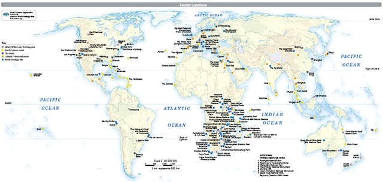
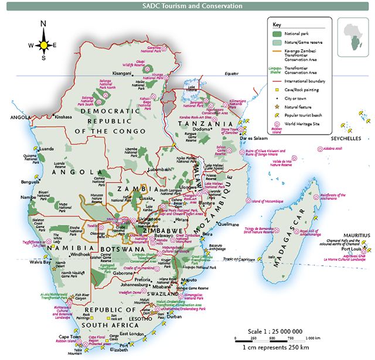
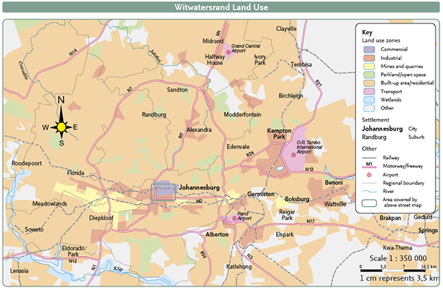

There are three main scales of maps in an atlas:
| Global maps (small scale) | Regional maps (medium scale) | Local maps (large scale) |
|---|---|---|
| For example: World Tourism map page 86 of the atlas. | For example: SADC Tourism and Conservation map page 47 of the atlas. | For example: Witwatersrand Land Use map on page 26 of the atlas. |
|  |  |  |